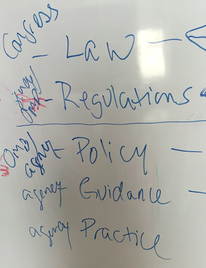

full-stack bureaucrat: layers of rules
“You can’t do that, it’s illegal,” was a common response to our attempts to bring modern tech practices to the US government. I worked for the Smithsonian Institution in 2013, then for the General Services Administration (GSA) from 2014-2016. First as a Presidential Innovation Fellow, then at 18F, I was part of a large group of industry experts who were recruited to transform government in partnerships with a few talented and experienced civil servants who understood policy and law.
I think it was Stephanie Rivera who first coined the term, full-stack bureaucrat. She had a much more formal title in real life, but this informal moniker helped me understand the work of policy makers through the lens of a software engineer. Whenever we were blocked by someone telling us something was illegal, it was important to find out what rule or law was actually causing the perceived or real conflict. This was akin to debugging the source of a software problem, isolating a bug to a specific place in the “stack.”
Layers of Rules
I think of the bureaucracy stack with practice at the top and the constitution at the bottom, even though the whiteboard photo I saved from one of the full-stack bureaucrat tech talks (below) lists them in the opposite order. In the list below, the top of the stack is the part that is most easy to change.
- Practice is what people do, which is designed to be within the law. It’s actually rather easy to accidentally break the law by doing something outside of your job description as a civil servant. This is the easiest place to change things if you can establish trust and do some research to show precedent or get a manager, someone from senior leadership or the general counsel to confirm that the new thing is legal. You often find helpful documentation from lower down in the stack…
- Guidance comes in the form of a memo or documentation that explains some nuanced point. Senior leaders, usually in consultation with general counsel, can issue new guidance when a new practice needs to be established. Sometimes you can find guidance that supports the change you are trying to make, or at least
- Policy is written by an agency for itself or for all agencies by a few special agencies like the Office of Management & Budget (OMB) or Office of Personel Management (OPM).
- Regulation is sometimes specific to an agency and sometimes applies to the whole government. Whatever governing body wrote the regulation is the same one who needs to modify it. Sometimes regulations are written into law. By the time you get here in the stack, and below, you are working in an entirely different realm.
- Law requires an act of congress.
- The Constitution
It was a little scary at first, when someone would tell me that what I wanted to do was illegal. After a while, I became adept at asking for more information. Meeting opposition with curiosity is a powerful technique. “Really?” I would ask “Could you tell me more about that?” or “Who could explain this to me in more detail?” Usually the policies and laws weren’t actually designed to prevent what I was seeking to do, and it was just a matter of changing the words that I used to allow me to create the change that I needed.
Notes on Terminology
The term full-stack bureaucrat is a nod to 18F’s staff of full-stack developers. The term “full-stack” describes software engineers who are capable of writing code at any level in the “stack” — from HTML that runs in the browser, to middle tier ruby, python or java to SQL that runs in the database (the bottom of the typical web app “stack”). In the early days of 18F, having a staff of full-stack developers was essential for the technical work, where a small staff needed to be prepared to hack anything.
As it turned out, we also needed to learn how to hack bureaucracy. Just like in debugging software, in order to isolate the problem and come up with a fix that will work, we need to figure out where in the stack the source of the problem lies. Understanding the “stack” that composes the legal framework of our government helped us navigate and modify the processes that sometimes prevented us from doing the technical work that was needed.
